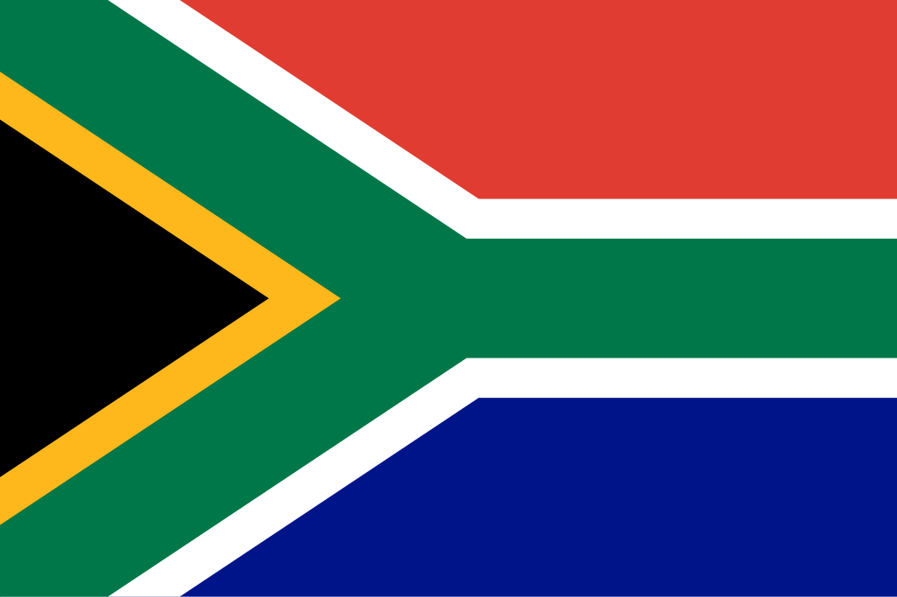

Africa do sul
 A África do Sul, oficialmente República da África do Sul, está localizada no extremo sul da África, entre os oceanos Atlântico e Índico, fazendo fronteira com Namíbia, Botsuana, Zimbábue, Moçambique, Essuatíni e envolvendo completamente o Lesoto. O país é conhecido por sua biodiversidade e pela diversidade cultural, linguística e religiosa, reconhecendo 11 línguas oficiais, incluindo africâner e inglês. A economia é considerada de renda média alta, sendo a segunda maior da África e a 25ª do mundo em termos de PIB (PPC). Apesar da diversidade étnica, com presença significativa de negros, europeus, indianos e mestiços, cerca de 25% da população enfrenta desemprego e pobreza extrema. Politicamente, é uma democracia constitucional e república parlamentar, com um presidente que acumula os papéis de chefe de Estado e de governo. O país é reconhecido por não ter passado por golpes ou guerras civis pós-descolonização, embora a população negra tenha sido emancipada plenamente apenas após o fim do apartheid em 1994. A África do Sul é membro de importantes organizações internacionais, como a ONU, União Africana, BRICS, G20 e OMC, destacando-se por ter boa infraestrutura e papel relevante na economia e política africana.
Historia
A história da África do Sul é marcada por uma complexa interação entre povos indígenas, colonizadores europeus e comunidades migrantes. Antes da chegada dos europeus, a região era habitada por diversos grupos africanos, como os Khoisan e povos bantos, que viviam da caça, coleta e agricultura. No século XVII, os holandeses estabeleceram a colônia do Cabo, introduzindo o africâner e desenvolvendo a agricultura em larga escala, enquanto no século XIX os britânicos expandiram seu domínio, trazendo o inglês e consolidando uma administração colonial mais rígida. Esse período também foi marcado por conflitos territoriais, guerras com populações indígenas e disputas internas entre colonos, resultando em uma sociedade profundamente dividida por etnia, língua e acesso a recursos. A descoberta de ouro e diamantes intensificou ainda mais essas tensões, atraindo imigrantes e fortalecendo a economia baseada em mineração, mas mantendo uma estrutura social desigual, onde a população negra era sistematicamente marginalizada.
No século XX, o país adotou oficialmente o apartheid, um regime de segregação racial que institucionalizou a discriminação e a exclusão da maioria negra, limitando direitos civis, acesso à educação, emprego e moradia. Durante décadas, movimentos de resistência, como o Congresso Nacional Africano (ANC), lutaram pela igualdade e liberdade, com líderes icônicos como Nelson Mandela e Desmond Tutu se tornando símbolos da resistência. A pressão interna e internacional culminou no fim do apartheid em 1994, quando o país realizou suas primeiras eleições multirraciais, elegendo Mandela como presidente. Desde então, a África do Sul tem buscado consolidar a democracia, enfrentar a desigualdade social e econômica herdada do passado, e ocupar um papel relevante no continente africano e no cenário global, sendo membro de organizações como BRICS, G20, ONU e União Africana, ao mesmo tempo em que preserva sua diversidade cultural e linguística.
Cultura
A cultura da África do Sul é extremamente diversa, refletindo a coexistência de múltiplos grupos étnicos, linguísticos e religiosos. O país reconhece 11 línguas oficiais, incluindo africâner, inglês e várias línguas bantas, o que se reflete na literatura, música e educação. Essa diversidade também se manifesta nas tradições e práticas culturais: há influências europeias, africanas e indianas, visíveis na culinária, nas festividades e na arte. A música e a dança ocupam um lugar central, com estilos que vão do jazz e pop moderno às manifestações tradicionais dos povos zulu, xhosa e san. O cinema e a literatura sul-africana frequentemente abordam temas históricos e sociais, incluindo a luta contra o apartheid e a experiência multirracial da população. Além da expressão artística, a sociedade sul-africana valoriza festas, cerimônias e rituais comunitários, que reforçam os laços familiares e sociais. A religião também desempenha um papel importante: a maioria da população segue o cristianismo, mas há presença significativa de tradições africanas, hinduísmo, islamismo e judaísmo. A cultura sul-africana é marcada pelo sincretismo e pela resiliência, resultado de séculos de encontros entre povos diferentes, e pela capacidade de celebrar a diversidade enquanto enfrenta desafios sociais e econômicos, mantendo uma identidade nacional única que mistura tradição e modernidade.

Clima
A África do Sul possui um clima variado, devido à sua grande extensão territorial e diversidade geográfica. De modo geral, o país apresenta clima temperado, com estações bem definidas, mas existem diferenças regionais significativas. Na costa leste, próximo ao Oceano Índico, o clima é subtropical, quente e úmido, enquanto a costa oeste, junto ao Oceano Atlântico, é mais seca, com influências do deserto da Namíbia. Nas regiões interiores, como o planalto central, o clima é mais ameno e semiárido, com verões quentes e invernos frios, podendo ocorrer geadas. Nas áreas montanhosas, como os Drakensberg, as temperaturas são mais baixas e há possibilidade de neve no inverno. O país apresenta também uma variação considerável de precipitação, concentrando-se principalmente nos meses de verão em muitas regiões, enquanto o inverno tende a ser seco, especialmente no sul e sudoeste. Essa diversidade climática permite uma grande variedade de ecossistemas e atividades econômicas, desde agricultura e vinicultura até o turismo de natureza, e influencia diretamente o modo de vida das populações locais, adaptadas a diferentes condições ambientais.
Biodiversidade
A África do Sul é um dos países mais ricos do mundo em termos de biodiversidade, possuindo uma grande variedade de ecossistemas que vão desde savanes e desertos até florestas e zonas costeiras. O país abriga milhares de espécies de plantas, muitas delas endêmicas, distribuídas em seis reinos florísticos, incluindo o famoso Fynbos, encontrado no Cabo Ocidental. A fauna também é extremamente diversificada, com animais icônicos como leões, elefantes, rinocerontes, leopardos e búfalos, que compõem os famosos “Big Five”, além de inúmeras espécies de aves, répteis e insetos. Os parques nacionais, como o Kruger National Park, desempenham um papel crucial na preservação dessas espécies e atraem turistas de todo o mundo, contribuindo para a economia local.
Além disso, a biodiversidade sul-africana é protegida por leis ambientais rigorosas e iniciativas de conservação, incluindo reservas privadas e projetos de proteção de espécies ameaçadas, como o rinoceronte e várias aves endêmicas. A diversidade natural do país não só sustenta a agricultura, a silvicultura e a pesca, mas também influencia a cultura e o modo de vida das comunidades locais, que mantêm tradições ligadas à fauna e flora regionais. Essa riqueza ecológica faz da África do Sul um dos países mais importantes do mundo para a conservação da natureza e estudo científico da biodiversidade.
Cidades
A África do Sul possui diversas cidades importantes, cada uma com características econômicas, culturais e históricas distintas. As cidades sul-africanas combinam modernidade e tradição, com centros urbanos bem desenvolvidos, infraestrutura avançada e áreas residenciais que refletem a diversidade social do país. As duas maiores cidades são Joanesburgo e Cidade do Cabo. Joanesburgo, localizada no interior, é o principal centro financeiro e comercial do país, conhecida pela mineração de ouro, vida urbana intensa e influência econômica na região. Já Cidade do Cabo, situada na costa, é famosa por sua beleza natural, incluindo a Table Mountain e praias deslumbrantes, além de ser um importante polo turístico e cultural, refletindo a história colonial e a diversidade multicultural da África do Sul.